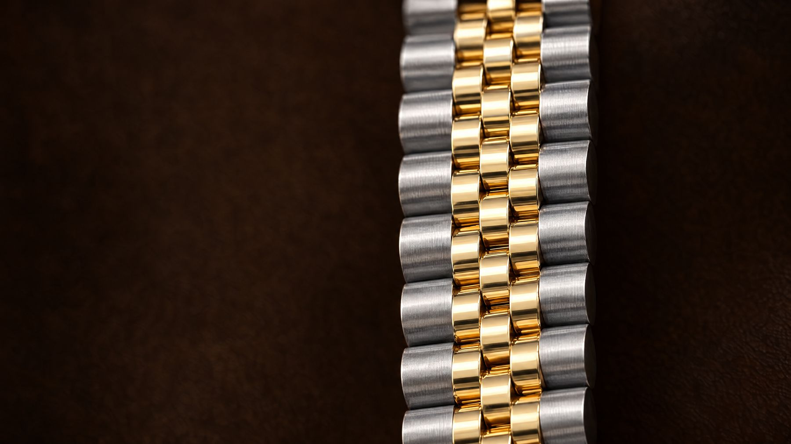

01 · Why Japan
Where the good pieces actually are
Japan's best pre-owned luxury trades at dealer-only auctions.
Collectors in Japan keep their pieces carefully, and the supply that comes out of that market is unusually clean. Most of it never reaches a shop window — it moves between dealers at closed auctions, which is why the same reference often costs less there than it does in a US boutique.

02 · How we get you in
One licence, 24,132 lots
We source from Brand Auction in Tokyo and bring the lot to you.
You do not need an account at the auction house, a Japanese address, or an import broker. You pick a lot from our listings and we handle the bidding, the paperwork, the inspection and the shipping as one job.
03 · Five steps
From a listing to your door
- 01Find
Browse the lots we can buy this week.
- 02Request
Send a request. No account, no payment.
- 03Confirm your total
We reply within one business day with the delivered total.
- 04Inspected in Tokyo
We check the piece in our Tokyo office before it ships.
- 05Delivered
Express to the US in 6–10 days, duties prepaid.
04 · What you actually pay
One total, confirmed before you pay
The number we send you is the number you pay.
Through TheOne Vintage
- Lot price
- Our fee
- Express shipping to the US
- Import duties, prepaid
- Inspection in Tokyo
All in the total we confirm with you. Nothing is charged on arrival.
Importing it yourself
- Lot price
- Auction house buyer's premium
- Domestic shipping in Japan
- International shipping
- Duties and customs handling, on arrival
- Your own authentication
Paid separately, some of it when the parcel arrives.
05 · How we grade
Condition, in plain language
Every graded lot carries an overall rank, and most carry separate exterior and interior scores. Exterior and interior are scored on a numbered scale where a lower number is cleaner: 1, 1+, 2, 2+, 3.
Each lot page lists the marks we found — rubbing, scratches, stains — in the auction house's own words. Lots without a rank are listed with photos and notes only.
See the full grading guide| Our rank | What it means |
|---|---|
| S | Unused — as new, unworn. |
| A | Excellent — barely used, no obvious wear. |
| B | Very good — light signs of use. |
| C | Good — visible use, nothing structural. |
| D | Fair — clear wear, described in full on the lot page. |
06 · Questions
Before you ask
Do I pay anything to request a lot?
No. Send a request and we reply within one business day with availability and your delivered total. There is no payment at that stage and no obligation to go ahead.
What is included in the price you quote?
The lot, our fee, express shipping to the US, and import duties — prepaid. We confirm the total before you pay, and nothing is charged when the parcel arrives.
How long does delivery take?
Six to ten days to the US once the piece has cleared inspection in Tokyo.
How do you know the piece is authentic?
Every lot comes from a licensed dealer auction in Japan, where pieces are checked before they are listed, and we inspect it again in our Tokyo office before it ships to you.
Do I need an account?
No. Requests are open to anyone — name, email and the lot you want is enough.
Can I ask for more photos?
Yes. Say so in your request and we will send detailed photos of the areas you care about before you decide.